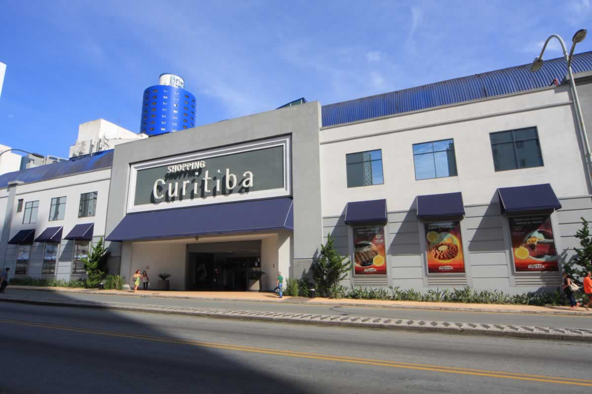
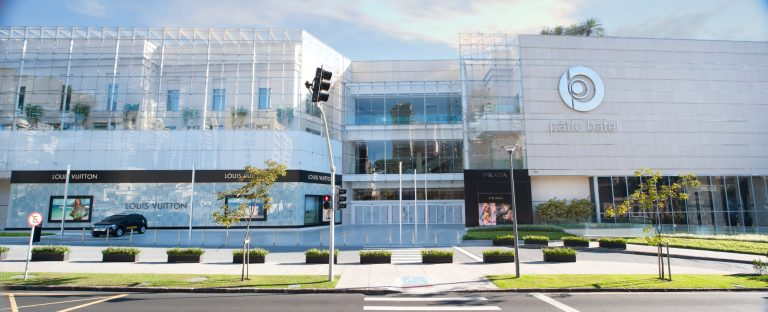
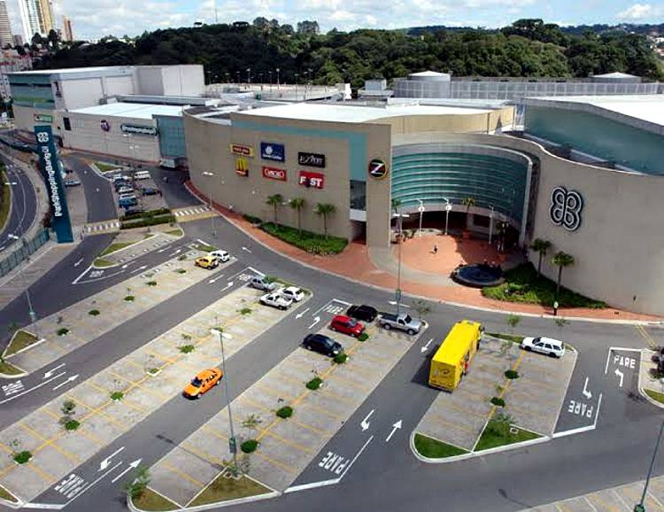
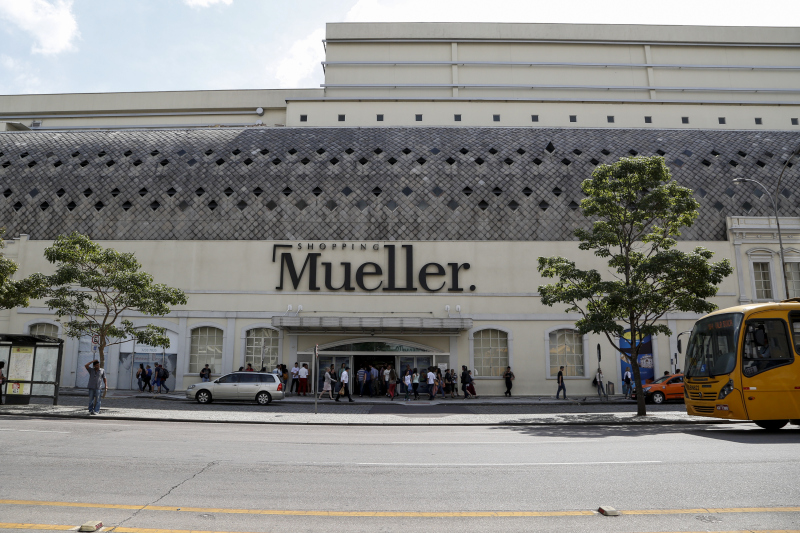

O Shopping Curitiba é um dos principais centros comerciais da cidade de Curitiba, localizado no coração do centro da cidade. Ele possui uma ampla variedade de lojas e marcas de renome nacional e internacional, além de um cinema com várias salas, restaurantes, praça de alimentação e diversas opções de entretenimento. O shopping também se destaca pela arquitetura moderna e sofisticada, com uma grande claraboia que ilumina todo o interior do edifício e um elevador panorâmico que oferece uma vista privilegiada da cidade. O Shopping Curitiba é um local bastante frequentado por turistas e moradores da cidade em busca de compras e diversão.

Pátio Batel
O Pátio Batel é um shopping center de alto padrão localizado em Curitiba, Paraná, Brasil. Inaugurado em 2012, o shopping oferece uma experiência de compras diferenciada aos seus visitantes, com uma ampla variedade de lojas, praça de alimentação, salas de cinema, academia, espaços de eventos, serviços de beleza e bem-estar, entre outros. Além disso, é conhecido por sediar diversos eventos culturais e sociais ao longo do ano. Sua localização privilegiada e suas opções de lazer e entretenimento o tornam um destino popular tanto para moradores locais quanto para turistas.

ParkShopping Barigui
O ParkShopping Barigui é um shopping center localizado em Curitiba, Paraná, inaugurado em 2003, com mais de 350 lojas e uma área de mais de 165.000 metros quadrados. Possui uma arquitetura moderna e oferece uma ampla variedade de produtos e serviços, como moda, eletrônicos, artigos esportivos, cosméticos, restaurantes, cinemas e outras opções de entretenimento. É um importante centro de compras e lazer da região, atraindo turistas e moradores de diversas partes da cidade.

Shopping Muller
O Shopping Mueller é um centro de compras localizado no coração de Curitiba, Paraná, Brasil. Inaugurado em 1983, o shopping passou por diversas reformas e expansões ao longo dos anos, tornando-se um ícone da cidade. Com uma área de mais de 52.000 metros quadrados, o Mueller oferece mais de 200 lojas, incluindo marcas nacionais e internacionais, restaurantes, cinema e opções de entretenimento. Além disso, o shopping é conhecido por sua arquitetura elegante e sofisticada, que combina elementos clássicos e modernos. É um destino popular para compras e lazer na cidade.

Jockey Plaza Shopping
O Shopping Jockey Plaza é um centro de compras localizado na cidade de Curitiba, Paraná, Brasil. Inaugurado em 2018, é um dos maiores shoppings do sul do país, com uma área de mais de 217.000 metros quadrados. O shopping conta com mais de 400 lojas, incluindo marcas nacionais e internacionais, além de diversas opções de entretenimento, como cinema, parque indoor e praça de alimentação. O Jockey Plaza é conhecido por sua arquitetura moderna e sustentável, com destaque para seu telhado verde e fachada em vidro. É uma opção popular para compras e lazer na cidade de Curitiba.